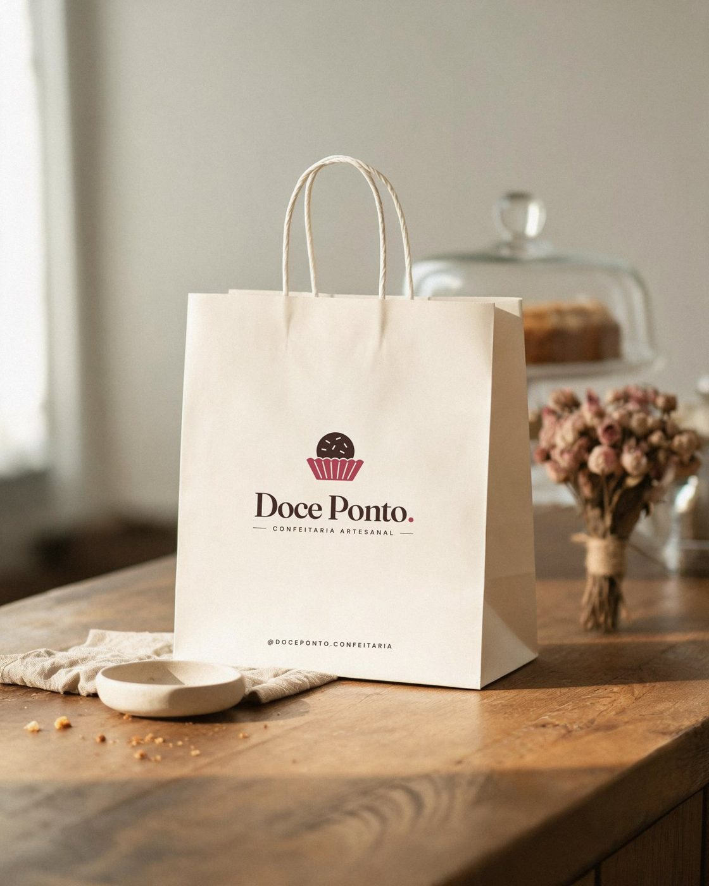
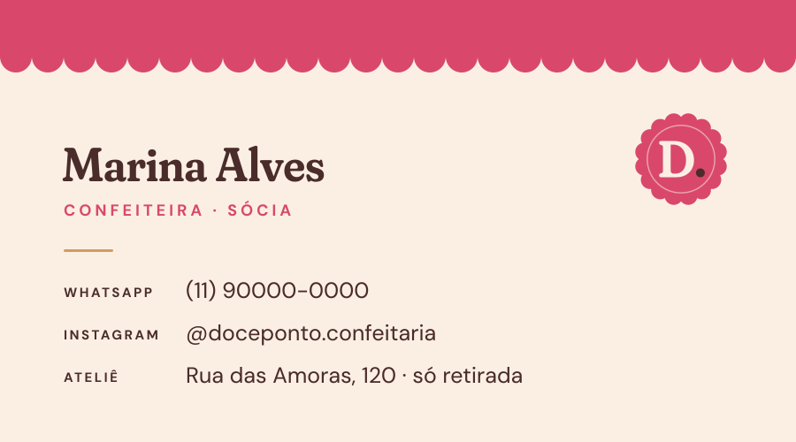
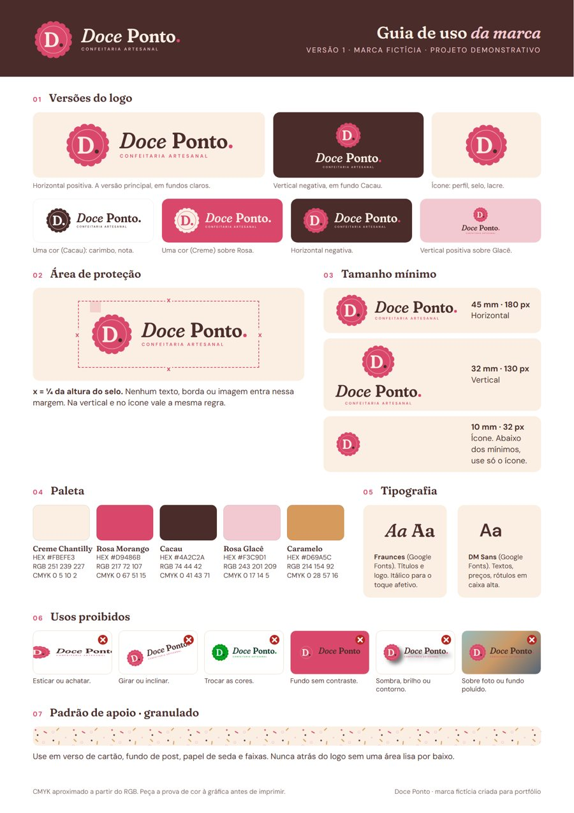

01 · Logo
Horizontal, vertical e ícone
O selo recortado lembra a borda de uma forminha de doce. O ponto rosa no fim do nome vira assinatura em tudo que a marca faz.


02 · Paleta
Cinco cores de confeitaria
Toque numa cor para copiar o HEX. O CMYK é uma conversão aproximada: a gráfica confirma na prova de cor.
03 · Tipografia
Um par gratuito do Google Fonts
Serifada macia para dar calor, sem serifa limpa para o que precisa ser lido rápido: preço, peso, validade.
Títulos e logo
Fraunces, SemiBold e Itálico, eixo “soft” no máximo.
Bolo de cenoura com cobertura de brigadeiro
Textos e rótulos
DM Sans, Regular e Bold. Caixa alta com espaçamento largo nos rótulos.
ENCOMENDAS ATÉ QUINTA · RETIRADA NO SÁBADO
Massa amanteigada, recheio de doce de leite e nozes.
04 · Padrão de apoio
Granulado que vira textura
Um módulo que se repete sem emenda. Serve de fundo, papel de seda, fita e verso de cartão.
05 · Aplicações
As primeiras peças da marca
Desenhadas em vetor, em tamanho real de produção. As cenas são simulações para mostrar o resultado.






06 · Guia de uso
Uma página para quem vai aplicar a marca
- Área de proteção: x = ¼ da altura do selo
- Tamanho mínimo de cada versão, em mm e px
- Paleta com HEX, RGB e CMYK
- Seis usos proibidos, com exemplo